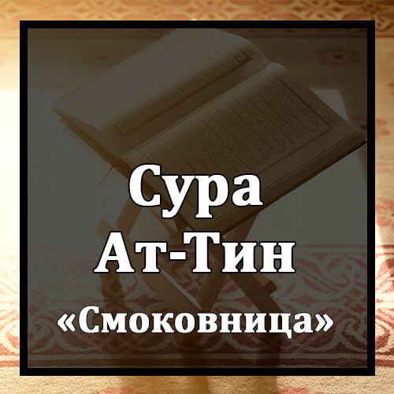

Бисмилляхир-Рахманир-Рахиим
Во имя Аллаха Милостивого и Милосердного!
Уат-Тини Уаз-Зайтуун.
Клянусь смоковницей и оливой!
Уа Тури Синиин.
Клянусь горой Синаем!
Уа Хазаль-Балядиль-Амиин.
Клянусь этим безопасным городом (Меккой)!
Лякад Халякналь-Инсана Фи Ахсани Таквиим.
Мы сотворили человека в прекраснейшем облике.
Сумма Рададнаху Асфаля Сафилиин.
Потом Мы низвергнем его в нижайшее из низких мест,
Илляль-Лязина Аману Уа `Амилюс-Салихати Фаляхум Аджрун Гайру Мамнуун.
за исключением тех, которые уверовали и совершали праведные деяния. Им уготована награда неиссякаемая.
Фама Йуказзибука Ба`ду Бид-Диин.
Что же после этого заставляет тебя считать ложью воздаяние?
АлейсаЛлаху Би`ахкамиль-Хакимиин.
Разве Аллах не является Наимудрейшим Судьей?